0.532134

0.577412
0.582466

0.587750

0.596333

0.610473

0.619686

0.623410

0.623411
0.642316
| Target image | 0.532134 | 0.577412 | 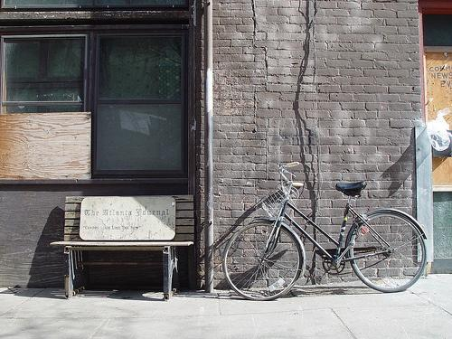 0.582466 | 0.587750 | 0.596333 | 0.610473 | 0.619686 | 0.623410 | 0.623411 | 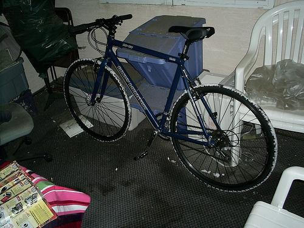 0.642316 |
Target image |  2070.166992 |  1652.235718 |  1550.489380 |  1510.818970 |  1374.448486 | 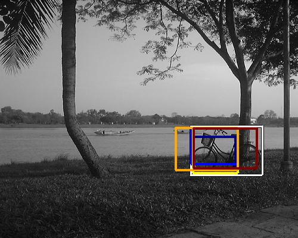 1368.993896 |  1346.435303 |  1335.190674 |  1302.775757 | 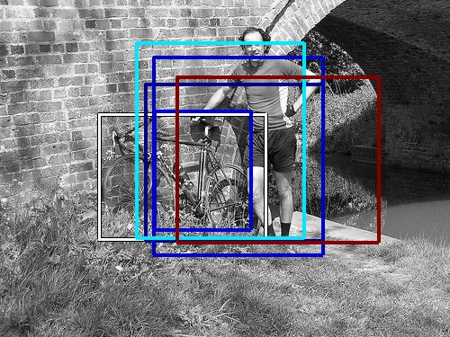 1272.932739 |
| Target image 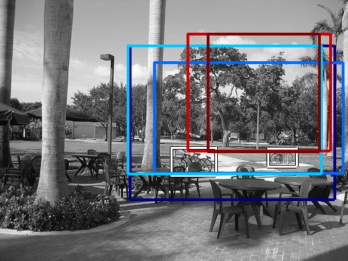 |  1373.077637 | 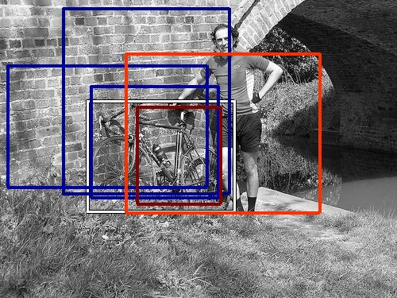 1228.352783 |  1210.804810 |  1178.555420 |  1173.805908 |  1132.655151 | 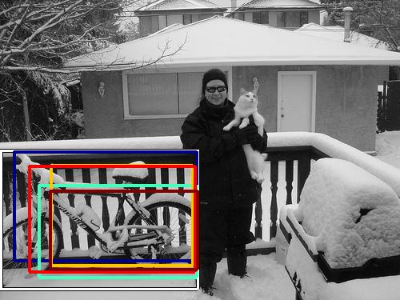 1049.753540 |  1043.913818 | 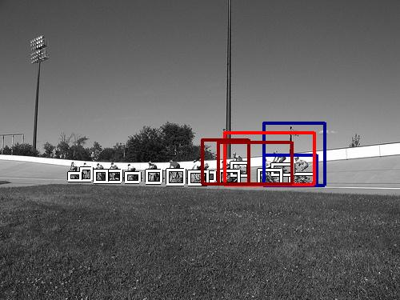 1042.851807 |  1032.216919 |
| Target image 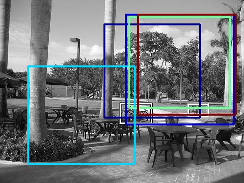 |  1784.456543 |  1698.322632 |  1559.333618 |  1374.031494 |  1141.221069 |  1102.506348 |  1098.631714 | 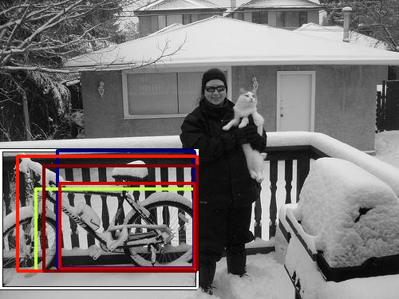 1087.423584 | 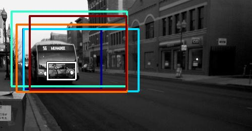 1058.249390 |  1013.979309 |
| Target image 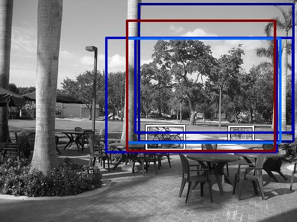 |  1829.321899 |  1579.398804 |  1489.593628 |  1479.485474 |  1252.944702 |  1201.196411 |  1178.749146 | 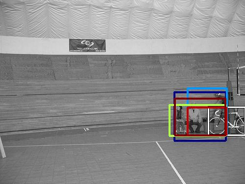 1152.675415 | 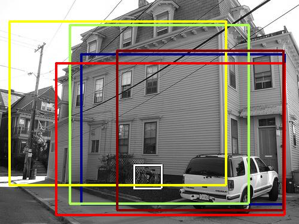 1113.014893 |  1109.112427 |